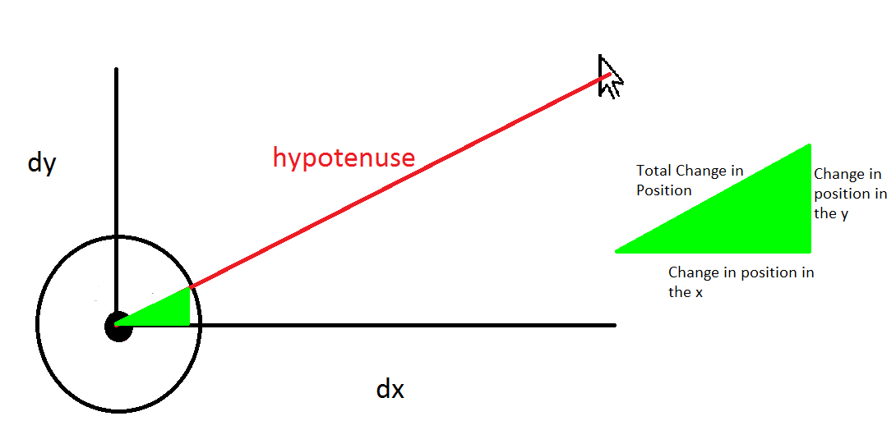

Extension 5: Module 5
- Extension 1: Methodize It
- Extension 2: Chase, The Mouse:
- Extension 3: Build Your Own Calculator!:
- Extension 4: Watermelon Puzzle:
- Extension 5: Tic-Tac-Toe:
- Extension 6: Jackpot
- Description
- Extension 9: Net Present Value
Extension 1: Methodize It
Refactoring
To complete this extension, go back to a lab or extension you have previously completed, and refactor it using methods to eliminate code duplication.
Extension 2: Chase, The Mouse:
- Authors
-
Arman Guerra
A Story
Chase, the Mouse, was standing still on the Standard Draw template one day, thinking about the meaning of life. All of a sudden, out of nowhere, a ball began to follow Chase. No matter where Chase went the ball would follow and pester Chase until he moved again. You will be writing the code for the ball.
Procedure
Create a FollowTheMouse class in the mousefollower package. You will have to write a few specific methods for this extension.
You can test those with the JUnit test provided in the package.
Once all of these methods are written, you will put them to use in
the main method to create a Standard Draw template in which a ball follows your mouse. The methods that you must write are:
double[] getMousePosition()-
This method returns an array of two
doubles, the x and y coordinates of the mouse. You can find the coordinates of the mouse on the standard canvas usingStdDraw.mouseX()andStdDraw.mouseY()-
Write that method so that the first
doublein the array that you return is the x coordinate of the mouse, and the seconddoubleis the y coordinate of the mouse. -
Test this method using the JUnit test
GetMousePositionTestin themousefollowerclass. When you run this test, a ball will appear on a Standard Draw template. Try to follow the ball with your mouse while the test runs.
-
drawBall(double[] position, double radius)-
This Method draws the ball wherever it should be in a specific frame.
-
This should take in an array of 2
doublesthat specifies the x and y coordinates of the ball and adoublefor the radius. -
Test this by manually drawing a ball in your main method at a specific x and y coordinate. You can use the following code:
``` double[] tester = new double[]{.5, .5}; drawBall(tester, .2); StdDraw.show(2000); ```If this draws a large ball in the middle of your template, then your
drawBall()method works!
-
double[] changePosition(double[] position, double[] mousePosition, double speed)-
This should return an array of 2
doublesthat represents the new position of the ball-
This method takes in an array of 2
doublesthat specifies the original position of the ball, an array of 2doublesthat specifies the mouse position, and adoublefor the speed.You are not simply drawing a ball at the position of the mouse. The ball should move at a constant speed towards the mouse at all times. This will require some basic geometry. However, you will not need to use any trigonometric functions.

dx and dy are the distances from the ball to the mouse. The legs of the green triangle represent the x and y components of the distance the ball moves in each frame. The hypotenuse of the green triangle represents the total distance the ball moves in each frame. This is, effectively, the “speed” of the ball, distance per frame.
-
Finally, make sure to implement all of these methods in the main method inside of a while loop, along with the other
necessary StdDraw code. It would be helpful to set the initial position of the ball outside of the while loop, and then alter it inside.
Extension 3: Build Your Own Calculator!:
- Authors
-
Arman Guerra
A How-To Guide
In this extension you shall complete the functionality of a calculator. You accomplish this by creating a series of methods that
use the arithmetic, String, boolean, and casting operations.
-
In eclipse, open the
calculatorpackage found in theextensionssource folder. -
You will find the following Java files:
Computations-
This is where you will be writing your code.
Calculator-
This is what you will run when you are finished writing all of your methods. This class creates a GUI, Graphic User Interface. This is what you see when you run
Calculator, an interface that allows the user to interact with the code.Calculatorwill not run until you are finished writing all of your methods, so if you want to check your code, use the unit test provided. ComputationsTest-
This is the unit test for this extension. Your code must pass this test for you to earn credit. You can check your methods with test as you go. We recommend that you check intermittently to see if you are writing your code correctly, so that if you’re making a mistake, you can catch yourself early.
Procedure
You will be writing two kinds of methods. The first kind will be the operational methods, which take in two parameters, and return the result of some operation. For example:
// Returns the result of adding d1 and d2.
public static double addDoubles(double d1, double d2) {
return d1 + d2;
}
The second kind of method will be to methods, which take in some value, and cast it to the necessary type. For example:
// takes in an int and returns a double
public static double intToDouble(int in) {
return (double)in;
}
If the input makes no sense, throw an exception. For example, if someone inputs a String, converting it to an int would make no sense.
So for the method
public static int stringToInt(String in) {
throw new UnsupportedOperationException();
}
you would throw an exception that indicates that this operation is unsupported.
When you throw this exception, our code catches the exception, and sends out an error message through the GUI. You will learn more about this in future classes.
Methods
First you will write:
-
Double operations, which take in two doubles and output one double:
-
double addDoubles(double d1, double d2) -
double subtractDoubles(double d1, double d2) -
double divideDoubles(double d1, double d2) -
double multiplyDoubles(double d1, double d2)
Make sure that the calculator will not crash if a user tells it to divide by zero. If a user tries to divide by zero, return zero.
At ths point, and at each subsequent point of arrival, run the unit test to see if the changes you have made so far pass the test. At this point, the
doubletests should pass. -
-
Integer operations, which take in two integers, and output one
-
int addInts(int i1, int i2) -
int subtractInts(int i1, int i2) -
int divideInts(int i1, int i2) -
int multiplyInts(int i1, int i2)
Again, there is a possibility that a user will divide by zero here. Do the thing detailed above.
-
-
A String Operation, which takes in two Strings and concatenates them
String concatenate(String s1, String s2)
-
Boolean operations, which take in two booleans and outputs one
-
boolean andBoolean(boolean b1, boolean b2)which returns the value of the expressionb1 && b2 -
boolean orBoolean(boolean b1, boolean b2)which returns the value of the expressionb1 || b2
-
Then you will write:
-
Double to methods, which take in a value and convert it to a double when it makes sense, and throw an error if it doesn’t make sense.
-
double intToDouble(int in) -
double doubleToDouble(double in) -
double stringToDouble(String in) -
double booleanToDouble(boolean in)
-
-
Integer to methods, which take in a value and convert it to an integer when it makes sense, and throw an error if it doesn’t make sense.
-
int intToInt(int in) -
int doubleToInt(double in) -
int stringToInt(String in)) -
int booleanToInt(boolean in)
-
-
String to methods, which take in a value and convert it to a String when it makes sense, and throw an error if it doesn’t make sense.
-
String intToString(int in) -
String doubleToString(double in) -
String stringToString(String in) -
String booleanToString(boolean in)
-
-
Boolean to methods, which take in a value and convert it to a boolean when it makes sense, and throw and error if it doesn’t make sense.
-
boolean intToBoolean(int in) -
boolean doubleToBoolean(double in) -
boolean stringToBoolean(String in) -
boolean booleanToBoolean(boolean in)
-
Each of these methods should be quite short.
Extension 4: Watermelon Puzzle:
- Authors
-
Arman Guerra
Adapted from Sit and Solve Brainteasers by Derick Niederman
Warm Up
Five watermelons, each of different weight, have been weighed in pairs to obtain the following weights:
20, 22, 23, 24, 25, 26, 27, 28, 30, 31
One way to solve this would be to figure out a mathematical algorithm for this number of watermelons and work out the weight of each watermelon. Another would be to try all of the possible combinations of weights five watermelons until you found one that has this same set of combinations of weights. Either way you did it, the specific set of watermelons that produces these weights is
[ 9, 11, 13, 14, 17 ]
Procedure
Since we have computers, and know how to write code, trying all of the possible weights of the five watermelons is now much easier. In this extension, you will take in an array of 10 weights, and you will try, iteratively, to come up with the individual weights of the five watermelons.
-
Find the code for this extension in the
watermelonspackage. -
Create two methods in the
Watermelonsclass. There is one finished method that will help you write the other two methods. The two methods you must create are:int[] allPairSums(int[] nums)-
This method must be completed first. Given the input array
nums, this method computes the pairwise-sum of each distinct pair of index values for that array. For example, given the input{40, 20, 10, 30}, the method must compute the sums of indices(0,1),(0,2),(0,3),(1,2),(1,3),(2,3), returning the array{60, 50, 70, 30, 50, 40}The ordering of the elements in the returned array does not matter.
int[] getSolution(int[] originalSums)-
This method returns a solution to the puzzle for the array of 10 integers that are passed into it. The ordering of elements in the array you produce does not matter, as far as the provided unit test is concerned.
The included method,
boolean sameIntArrays(int[] one, int[] two)will help you with this method. When you pass two integer arrays intosameIntArrays, it checks whether the two integer arrays contain the same elements. The order of the elements in the arrays does not matter.
-
Make sure you pass the provided unit tests. Once it does, you will have a solution to the puzzle.
For extra fun, go into the code for the Unit test, and inside the
int[] genSolution()method, uncommentList<Integer> ans = genIntsSlow();and comment outList<Integer> ans = genIntsFast();. This will pass larger weights into yourint[] getSolution(int[] originalSums)method, and so the computation will take longer. It could take up to a minute. This is not required, but it is a neat example of a very large computation.
Extension 5: Tic-Tac-Toe:
- Authors
-
Tim Huber
- Ron K. Cytron
Introduction
The design of software can often be specified using its API, or Application Programming Interface. The API specifies the methods that are offered by the software. Documentation for those methods typically includes:
-
the signature of each method:
-
the method’s name
-
the types of the method’s parameters
-
the return type (or
void) for the method
-
-
the documentation for the method
The above should be sufficient to use the software, but it can also form the design document for implementing the software.
-
For this Tic-Tac-Toe assignment, the API can be found here.
-
A video showing how to navigate the documentation can be found here.
-
This form of documentation is known as Javadoc. It can be generated automatically from the
/**…*/comments that you entered into your work for this module’s lab.
Procedure
-
Find the assignment’s code in the
tictactoepackage of theextensionsfolder. -
Watch the documentation video.
-
Implement the methods according to the documentation.
-
Test as you go by running the unit test
TTTTest.
It is suggested that you implement the methods in the following order:
-
String[][] genBoard() (actually shown in the video)
-
For this assignment, when an improper input is found by methods like this, you are required to
throwan IllegalArgumentExceptionAn example of that is done for you in
verifyValidPlayer, so take a look at that for guidance.
Other methods are in the class and documentation, but they are already implemented for you:
Play the game
-
Watch this video showing the play of the game.
-
Run the
Gameclass in thetictactoepackage of yourextensionsfolder to play against the computer.
Extension 6: Jackpot
- Authors
-
Arman Guerra
- Nathan Vogt
Description
In this assignment you create a slot machine.
In this game, you pull a lever which causes three or more shapes to appear randomly. Based on the combination of the
shapes and their colors, the player wins a certain amount of money. You will create this machine using Sedgewick’s
StdDraw.
Procedure
Be creative! Many implementations will satisfy the requirements.
Your slot machine must include:
-
A method for drawing the slot machine. Most slot machines have between 3 and 7 reels.
-
A method for randomly picking shapes and their colors and displaying them. It is up to you to decide how many different shapes and colors and which ones to use.
-
A way to reward multiple win conditions for when all the colors are the same, all the shapes are the same, and both the colors and shapes are the same.
-
A way to show the balance that the player has in the machine. Each pull of the lever should cost a certain amount of money (that is less than the win amounts).
Extension 9: Net Present Value
- Authors
-
Arman Guerra
- Alan Waldman
- Wikipedia
- Ron K. Cytron
Present Value
In this assignment, we consider and reason about the
time value of money.
This is based on the observations:
-
While we live in the present, we understand the value of \$1 in terms of what it can buy today.
-
It’s difficult for us to think of what a dollar could buy 100 years ago, or 100 years from now.
-
If we want to compare monetary values from several time periods, it is helpful to view them in the same time period.
The suggestion is therefore to reason about all currency in today’s dollars. This is called present value.
The ideas discussed here are widely used in economics, finanace, and accounting.
Two Friends and your \$1
Suppose you have \$1 and two friends who offer to take your dollar under the following circumstances:
| Friend One |
This friend takes your \$1 and gives you back \$5 tomorrow.
| Friend Two |
This friend takes your \$1 and gives you back \$10 in fifty years.
Which friend is offering you the better deal?
-
If we consider only the number of dollars you receive from these two friends, then in 50 years you end up with either \$5, or \$10.
-
It may therefore seem that Friend Two is offering you the better deal.
-
However, we know that \$10 fifty years from now is not worth \$10 today.
How do we reason about the value of \$10 in fifty years? We must first model how the value of money changes over time. We do this by choosing:
-
a time period during which the money’s value stays the same, and at the end of which money grows instantaneously by some factor r
For this exercise, we choose a year’s time, so that money changes value annually.
-
the factor r, which is interchangeably called the discount rate, opportunity cost of capital, and rate of return.
For this exercise, we choose 10% growth so that r = 0.1.
We then use the time value of money to compute the following:
-
What would \$1 be worth in fifty years if invested with some rate of return r?
We model this computation by the function
futureValue(dollars, years, r) = dollars × (1.0 + r) ^ yearsThus, \$1 is the same now as \$117 dollars fifty years from now.
-
How much would I have to set aside today so that it would be worth \$1 in fifty years using the discount rate r?
We model this computation by computing the reverse (running time backwards) of what we computed for the future:
presentValue(dollars, years, r) = dollars / (1.0 + r) ^ yearsThus, to have \$1 fifty years from now, we would have to set aside 0.854 cents (less than one cent) now.
Returning to your two friends, let’s relate both friends’ offers in terms of present value, and compute your profit or loss (your net result).
Net Present Value
Recall we assume a discount rate of 10% (r=0.10) and we regard
time annually.
| Friend One |
-
This friend takes your \$1 and gives you back \$5 tomorrow.
-
With money changing value annually, \$5 tomorrow is the same as \$5 today.
-
Computing
presentValue(\\$5, 0, 0.10) = \\$5 / (1.0 + 0.10) ^ 0yields \$5.
-
This friend’s offer is therefore worth \$5 today.
-
Your net gain is the \$5 you receive minus the \$1 you gave away, so you net \$4.
Because your net present value from this deal is positive (\$5), you would choose to take advantage of this friend’s offer.
Friend Two
-
This friend takes your \$1 and gives you back \$10 in a fifty years.
-
\$10 in fifty years sounds better than \$5 tomorrow, but …
-
Computing
presentValue(\\$10, 50, 0.10) = \\$10 / (1.0 + 0.10) ^ 50offer is worth about 8 cents today.
-
Your net gain is the 0.08 dollars you receive minus the \$1 you gave away, so you net −0.92 dollars.
Because your net present value is negative (−0.92), you would decline this friend’s offer.
Product Development Story
Consider the following example from Wikipedia, based on investing \$100,000 to create a new product:
-
The product would cost you \$100,000 to develop. That money would be gone forever.
-
Every year for the next 12 years, you would receive \$10,000 from sales of the product.
In summary, you give away \$100,000 and you get \$120,000 back. Is this a good deal? Let’s look at the returns in terms of Net Present Value (NPV):
| Year | Present Value Computation (for year 0) | Computation Result | Net Present Value | Comments | |||
|---|---|---|---|---|---|---|---|
| 0 |
|
= −\\$100,000.00 | −\\$100,000.00 | Initial investment, no return until year 1 | |||
| 1 |
|
= \\$9,090.91 | −90,909.09 | The Computation Result column shows the yearly return of \\$10,000, discounted by the rate (0.10) so it can be expressed in present (year-0) dollars | |||
| 2 |
|
= \\$8,264.46 | −82,644.63 | The Net Present Value column shows the cumulative gain or loss | |||
| 3 |
|
= \\$7,513.15 | −75,131.48 | ||||
| 4 |
|
= \\$6,830.13 | −68,301.35 | ||||
| 5 |
|
= \\$6,209.21 | −62,092.14 | ||||
| 6 |
|
= \\$5,644.74 | −56,447.40 | ||||
| 7 |
|
= \\$5,131.58 | −51,315.82 | ||||
| 8 |
|
= \\$4,665.07 | −46,650.75 | In present value, the \\$10,000 received in this year is worth less than half! | |||
| 9 |
|
= \\$4,240.98 | −42,409.77 | ||||
| 10 |
|
= \\$3,855.43 | −38,554.34 | ||||
| 11 |
|
= \\$3.504.94 | −35,049.40 | ||||
| 12 |
|
= \\$3,186.31 | −31,863.09 | At the end of 12 years, we have \\$120,000 but that is worth only \\$68,136.91 in present (year-0) dollars, with each year's \\$10,000 discounted to show present value. |
The NPV of the \$100,000 investment is −31,863.09, which is a substantial loss. Because the NPV is negative, this is not an investment you should make.
Procedure
-
Find and open the
NPVclass found in thenetpresentvaluepackage of theextensionssource folder in your repository. -
Using the information provided above, your task is to complete the methods within that class
-
Test your work by running the provided unit test. It should show green and produce a table similar to the one provided above.